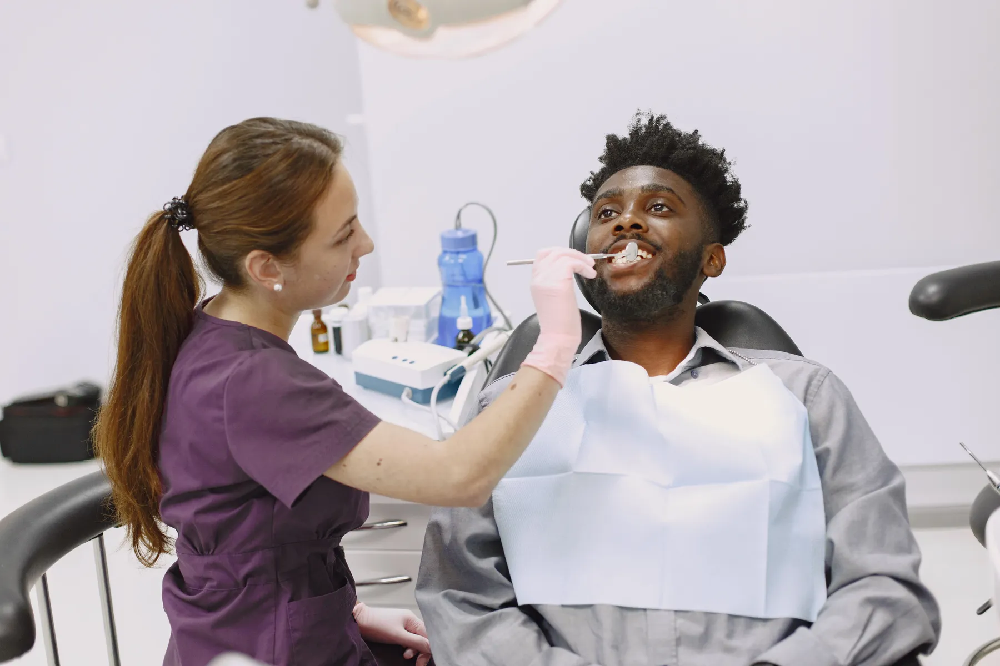
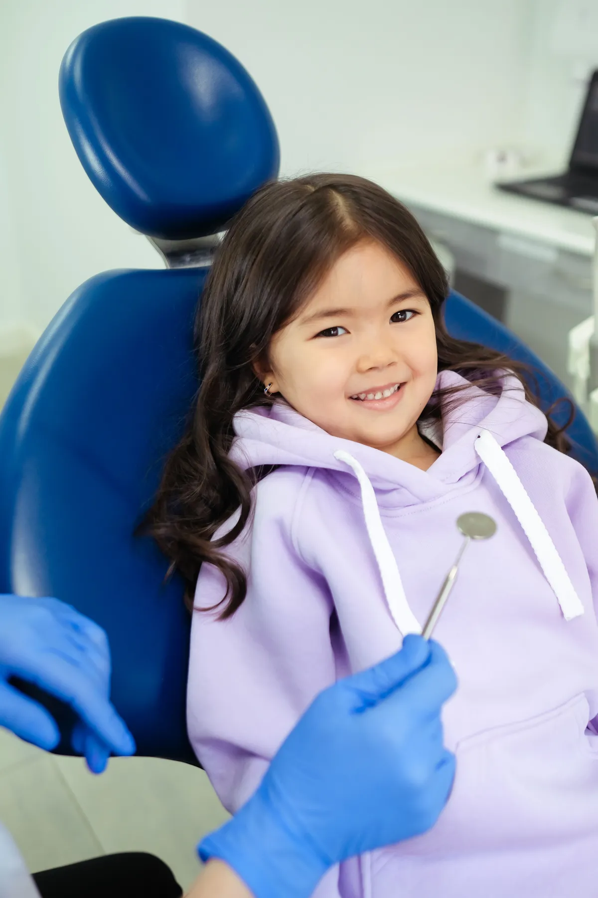
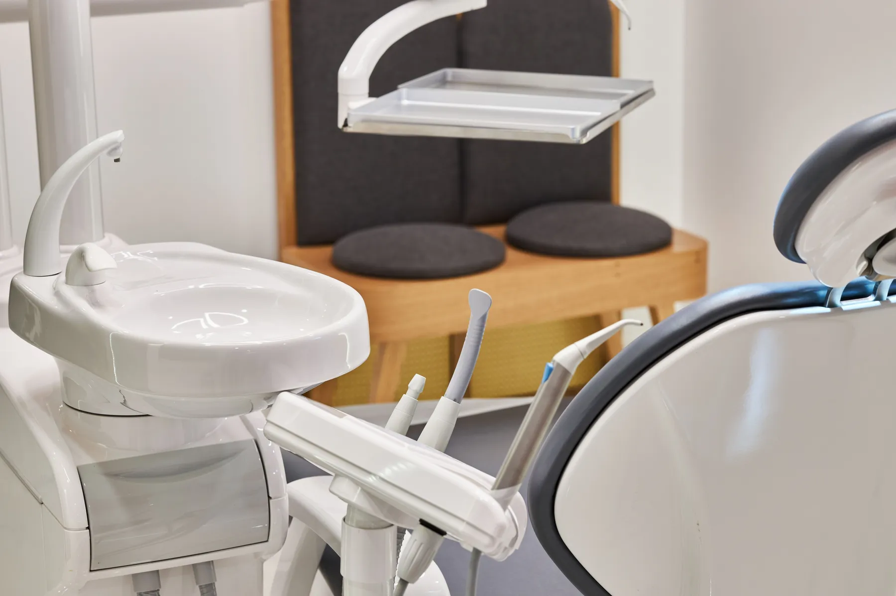
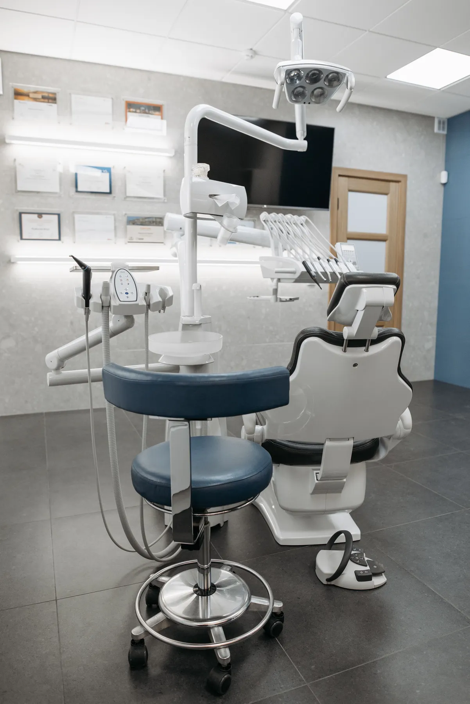

Nerede yaşarsanız yaşayın,
kliniğiniz Denizli'de.
Yurt dışından gelen hastalar için tarihli plan; çocuklar için sakin bir ilk ziyaret. Randevu masasında her şey tek mesajda, üç dilde.
İyi bir tedavi, koltuğa oturmadan önce başlar: ne yapılacağını, kaç seans süreceğini ve neden öyle planlandığını bilerek gelirsiniz.


Önce bakılır,
sonra planlanır.
İlk muayenede ağız içi kontrol ve gerekiyorsa röntgen; tedavi seçenekleri ve seans planı burada konuşulur. Bu bölümde kliniğinizin gerçek işleyişi durur; bilgileri sizden alırız, uydurma cümle yazmayız.
- Şikâyetinizin ve beklentinizin dinlenmesi
- Muayene, gerekiyorsa röntgen
- Seçenekler ve seans planının konuşulması

İlk ziyaret,
sakin bir tanışma.
Instagram'daki "Çocuk Dostlarım" bölümünüz burada velilere rehber olur. Yayında bu fotoğraf, veli izniyle kliniğinizde çekilen bir kare olur.
- İlk kontrol için ağrıyı beklemeyin
- "Acımayacak" yerine "dişlerini sayacağız" deyin
- Çocuğun dinlendiği bir saat seçin

Tatilinizin günlerine
göre planlanır.
Öne çıkanlarınızdaki bayraklar, yurt dışından gelen hastalarınızı anlatıyor. Randevu masasında geliş ve dönüş tarihini yazan hasta, mesajını kendi dilinde gönderir; röntgeni varsa önceden iletir.
- Terminanfrage auf Deutsch, mit Ankunfts- und Abreisedatum
- Appointment request in English, with your travel dates
Hangi tedavi, nasıl ilerler?
Başlıklar Instagram profilinizden. Genel bilgilendirmedir; plan muayenede kişiye göre belirlenir. Fiyat, kampanya, hasta yorumu ve öncesi-sonrası görsel yoktur.

Sakin bir oda,
anlaşılır bir plan.
Tek mesaj, üç dil.
Seçtikçe sağdaki mesaj seçtiğiniz dilde yazılır. Yurt dışından geliyorsanız tarihlerinizi ekleyin; klinik size uygun gün ve saati yazar.

Yenişehir, Ferah Evler.
- Adres
- Yenişehir Mah. 13. Sokak, Ferah Evler No:17, Merkezefendi / Denizli
- Telefon / WhatsApp
- 0501 130 00 20
- Çalışma saatleri
- Sizden alınıp eklenecek
Kliniğe bir bakış.